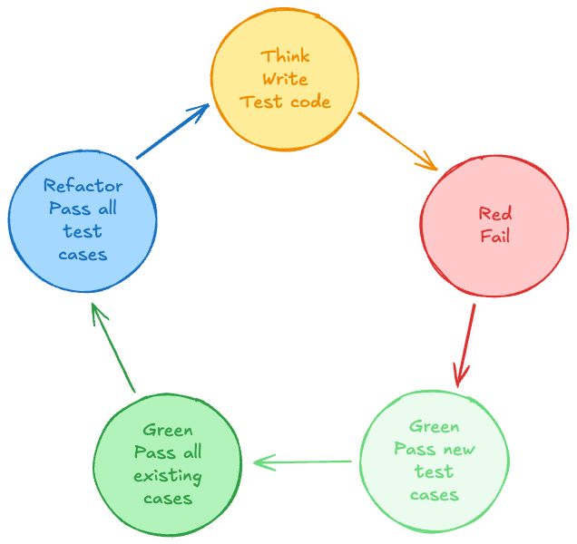
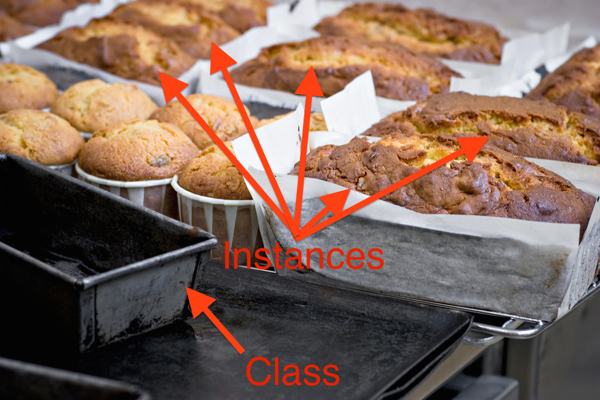

Coding Properly
Apprendre à écrire du code Python professionnel : organisation en fichiers `.py`, tests avec pytest et TDD, bonnes pratiques Git, OOP, style PEP8, documentation et type hinting.
Apprendre à écrire du code Python professionnel : organisation en fichiers .py, tests avec pytest et TDD, bonnes pratiques Git, OOP, style PEP8, documentation et type hinting.
📋 Cheatsheet — Coding properly
Tests & TDD
pytest -v # lance tous les tests avec détails
pytest -v -k data_student # filtre sur les tests contenant "data_student"
python -m doctest -v school/student.py # lance les doctests d'un fichierGit — commit propre
git status # vérifier l'état avant de commiter
git add school/student.py # stager un fichier spécifique
git commit -m "feat(students): minimal working Student" # message conventionnel
git add tests/school/test_student.py
git commit -m "test(students): new test case for Student" # commiter tests séparémentStyle de code
from datetime import date # ✅ import explicite en haut du fichier
## import datetime # ❌ import non-explicite
## from modulename import * # ❌ import star
class EngStudent(): # ✅ CamelCase pour les classes
language = "Python" # ✅ attributs de classe juste après la définition
def __init__(self, name, age): # ✅ 4 espaces d'indentation
self.name = name.capitalize() # ✅ espaces autour de =
self.age = age
def says(self, quote): # ✅ snake_case pour les méthodes
return f"{self.name} says: {quote}" # ✅ guillemets doubles cohérents
@classmethod
def from_birth_year(cls, name, birth_year): # ✅ cls, noms explicites
return cls(name=name, age=date.today().year - birth_year)Linting & formatage
pip install autopep8 pylint mypy pdoc # installer les outils
autopep8 --in-place school/engstudent.py # formate le fichier en place
pylint --output-format colorized school/engstudent.py # analyse le style
python -m mypy school/engstudent.py # vérifie les types statiquement
pdoc school # génère la documentation HTMLMakefile
make test # lance pytest
make lint # lance pylint
make format lint # formate puis analyse
make # lance lint + test + typecheck (default)Type hinting
from typing import Self
class EngStudent():
@classmethod
def from_birth_year(cls, name: str, birth_year: int) -> Self:
# str et int sont des hints : documentent les types attendus
# mypy vérifiera statiquement ces annotations
age = date.today().year - birth_year
return cls(name=name, age=age)OOP — héritage
class Student():
language = "Ruby"
def __init__(self, name, age):
self.name = name.capitalize() # capitalise automatiquement
self.age = age
def says(self, quote):
return f"{self.name} says: {quote}"
@classmethod
def from_birth_year(cls, name, birth_year):
age = date.today().year - birth_year
return cls(name, age)
class DataStudent(Student): # ✅ hérite de Student (DRY)
language = "Python" # surcharge l'attribut de classe
def __init__(self, name, age):
super().__init__(name, int(age)) # force le cast en int + appelle __init__ parent⚠️ Récapitulatif — Erreurs clés à éviter
[!CAUTION]
Mettre plusieurs classes dans un seul fichier
.py
❌
student.pycontientStudent,DataStudent,EngStudent
✅ Un fichier par classe :
student.py,datastudent.py,engstudent.py
[!CAUTION]
Ne pas commiter avant de refactorer
❌ Refactorer directement sans avoir sauvegardé l'état fonctionnel
✅ Commiter la version qui passe les tests, puis refactorer (on peut toujours revenir)
[!CAUTION]
Importer à l'intérieur d'une fonction ou avec
import *
❌
def from_birth_year(...): import datetime→ import dans une fonction
✅
from datetime import date→ en haut du fichier, explicite
[!CAUTION]
Écrire des commits fourre-tout avec des messages vagues
❌
git commit -m "changes"ou commiter tous les fichiers d'un coup
✅ Un commit = un changement, message au format Conventional Commits
[!CAUTION]
Oublier d'écrire des docstrings
❌ Des fonctions sans documentation → incompréhensibles dans 6 mois
✅ Une docstring minimale sur chaque fonction, classe et module
1) Pourquoi coder proprement ?
On passe plus de temps à lire du code qu'à en écrire — le sien et celui des autres. La qualité du code détermine sa maintenabilité, sa réutilisabilité et sa testabilité.
Les quatre axes couverts dans ce cours : organisation en fichiers .py, tests et TDD, style de code, documentation et type hinting.
2) Passer des notebooks aux fichiers .py
Déplacer le code dans des fichiers .py permet de simplifier les notebooks (ne garder que l'essentiel), de réutiliser le même code dans plusieurs notebooks, de le tester extensivement, et de le déployer en production.
3) Tests et TDD
3.1 Pourquoi tester ?
Les tests permettent d'améliorer la qualité et la fiabilité, de détecter les bugs avant production, d'automatiser la vérification du comportement attendu, de faciliter le refactoring en toute sécurité, et d'activer les pipelines CI/CD.
Frameworks Python populaires : 👉 unittest, 👉 pytest, 👉 nose2, 👉 doctest
3.2 Le cycle TDD : Red → Green → Refactor
- Write a test first — Définir comment la fonction doit se comporter 🖊️
- Run the test — Il doit échouer à ce stade 🔴
- Write minimal code — Juste assez pour faire passer le test ✍️ 🟢
- Run all existing tests — Adapter jusqu'à ce que tout passe 🟢
- Refactor — Nettoyer le code tout en gardant les tests verts 🧹 🟢

[!TIP]
Le TDD encourage du code modulaire et maintenable, réduit le temps de débogage, et les tests servent de documentation des comportements attendus.
4) Git — commiter proprement
4.1 Règles pratiques
Commiter souvent et en petit — Les petits commits permettent des retours en arrière précis.
Un changement = un commit — Si plusieurs fichiers ont changé, les commiter séparément (ex. : tests et code séparément).
Messages de commit significatifs :
- ❌ Ne pas décrire les changements de code (on les voit dans le diff)
- ✅ Décrire pourquoi le changement a été fait et ce qu'il accomplit
- Format : une ligne de titre, éventuellement un corps plus détaillé
4.2 Conventional Commits
Exemples de messages conformes :
feat: csv loader # nouvelle fonctionnalité
feat(sourcing): add stock data fetcher # fonctionnalité dans un scope
fix(sourcing): catch non-existing ticker # correction de bug
test(preproc): no null values # ajout de test
doc: add changelog # documentation
refactor(students): DataStudent inherits from Student # refactoring
build: Makefile to format, test, lint, type check # build/tooling5) OOP — Programmation orientée objet
5.1 Qu'est-ce que l'OOP ?
Object-oriented programming (OOP) is a programming paradigm based on the concept of objects, which can contain data (attributes) and code (methods). — Wikipedia 👉 en.wikipedia.org/wiki/Object-oriented_programming
L'OOP rend le code modulaire, réutilisable et maintenable, améliore la scalabilité et facilite le débogage.
Tu as déjà utilisé l'OOP sans le savoir :
df = pd.DataFrame() # df est une instance de la classe DataFrame
response = requests.get(url) # response est une instance de la classe Response
response.status_code # attribut de l'instance5.2 Classes et instances
Une classe est un modèle (le moule). Une instance est l'objet créé à partir de ce modèle (le gâteau).

Comportement attendu de la classe Student (format doctest) :
>>> margo = Student("margo", 34)
>>> margo.name
'Margo'
>>> margo.age
34
>>> margo.language
'Ruby'
>>> margo.says("I was a student of batch 7!")
'Margo says: I was a student of batch 7!'python -m doctest -v school/student.py # lancer les doctests5.3 Créer la classe Student
class Student():
# Attribut de classe (partagé par toutes les instances)
language = "Ruby"
# Constructeur : appelé à chaque création d'instance
def __init__(self, name, age):
self.name = name # attribut d'instance
self.age = age # attribut d'instance
# Méthode d'instance
def says(self, quote):
return f"{self.name} says: {quote}"Déplacer dans un fichier :
mkdir school
touch school/student.py # crée le fichier
git init # initialise le repo
git add school/student.py
git commit -m "feat(students): minimal working Student"5.4 Lancer les tests
pytest -v # lance tous les testsCorriger les erreurs et commiter tests et code séparément :
git add tests/school/test_student.py
git commit -m "test(students): new test case for Student"
git add school/student.py
git commit -m "feat(students): Student capitalize name"5.5 Class methods
Permettent d'instancier une classe d'une manière alternative (factory pattern) :
class Student:
# [...]
@classmethod
def from_birth_year(cls, name, birth_year): # cls = la classe elle-même
age = date.today().year - birth_year # calcul de l'âge
return cls(name, age) # crée une instance>>> pedro = Student.from_birth_year("pedro", 1988)
>>> pedro.name
"Pedro"5.6 Héritage (DRY)
class DataStudent(Student): # hérite de Student
language = "Python" # surcharge l'attribut de classe
def __init__(self, name, age):
super().__init__(name, int(age)) # appelle __init__ de Student + cast intUn fichier par classe (bonne pratique) :
touch school/datastudent.py # ✅ une classe = un fichier## datastudent.py
from school.student import Student # importer la classe parente
class DataStudent(Student):
[...]6) Style de code
6.1 Pourquoi ça compte
Un bon style améliore la lisibilité, facilite la détection d'erreurs, aide les collègues à relire le code, et est évalué lors des entretiens techniques.
6.2 Les 7 erreurs classiques (à repérer)
## ❌ Version avec erreurs
class engstudent ( ) :
school="Le Wagon"
def __init__ (self, name, age) :
self.name=name.capitalize()
self.age=age
def says(self,Quote):
return f"{self.name} says: {Quote}"
@classmethod
def from_birth_year(clas, name, by):
import datetime
return clas(name = name.capitalize(),age =datetime.date.today().year-by)
language='Python'Les 7 problèmes : indentation à 2 espaces (doit être 4), espaces manquants autour de =, espaces inutiles autour des parenthèses, engstudent pas en CamelCase, Quote pas en snake_case, variable by non descriptive, clas au lieu de cls, attribut de classe en bas au lieu d'en haut, import à l'intérieur d'une fonction, guillemets incohérents.
## ✅ Version corrigée
from datetime import date
class EngStudent():
language = "Python"
def __init__(self, name, age):
self.name = name.capitalize()
self.age = age
def says(self, quote):
return f"{self.name} says: {quote}"
@classmethod
def from_birth_year(cls, name, birth_year):
age = date.today().year - birth_year
return cls(name=name, age=age)6.3 PEP8 — Les règles essentielles
Espaces : autour de = et des opérateurs binaires, pas avant les parenthèses/crochets, pas autour de = dans les appels de fonction (my_function(arg=1)).
Lignes vides : une ligne entre méthodes, deux lignes entre classes/fonctions au top level.
Nommage : variables, fonctions, méthodes → snake_case ; classes → CamelCase ; modules → minuscules courts.
Longueur de ligne : max 79 caractères.
Imports : en haut du fichier, explicites (from module import ClassName).
6.4 Formatters et linters
## Formatters (style)
pip install autopep8 # respecte votre style si PEP8
autopep8 --in-place school/engstudent.py # formate en place
## Linters (détection de problèmes)
pip install pylint
pylint --output-format colorized school/engstudent.py # analyse et score /10
## Ruff (alternatif moderne et rapide)
pip install ruff👉 Comparaison Ruff / flake8 / pylint
7) Documenter le code
7.1 Pourquoi documenter ?
Le code sera relu par d'autres, par vous-même dans 6 mois, et par les utilisateurs de vos librairies. Une documentation claire explique ce que fait le code, comment l'utiliser, et pourquoi certains choix ont été faits.
7.2 Types de documentation
Docstrings (modules, classes, méthodes, fonctions) : permettent aux utilisateurs de savoir comment utiliser le code, visibles dans VS Code / Jupyter au survol, utilisables pour générer une doc automatique.
Commentaires inline : pour les développeurs, expliquent le pourquoi d'une implémentation, les limitations ou les TODO.
7.3 Styles de docstrings
Les styles principaux : SciPy/NumPy (utilisé par Pandas, scikit-learn), Google docstrings (TensorFlow, Keras), reStructuredText (Sphinx/Read The Docs). Tous partagent la même idée : décrire la fonction, lister les paramètres et leur type, décrire la valeur de retour.
[!TIP]
Une docstring non-standard vaut mieux qu'aucune docstring. GitHub Copilot peut les générer automatiquement.
7.4 Générer la doc automatiquement
pip install pdoc
pdoc school # génère une documentation HTML navigable8) Type hinting
Python est un langage dynamiquement typé : il ne connaît les types qu'à l'exécution. Le type hinting permet de documenter les types attendus et d'effectuer une vérification statique avec mypy.
from typing import Self
class EngStudent():
@classmethod
def from_birth_year(cls, name: str, birth_year: int) -> Self:
# name doit être un str, birth_year un int, retourne une instance de la classe
age = date.today().year - birth_year
return cls(name=name, age=age)Le type hinting ne change pas l'exécution, mais permet la vérification statique et la validation avec Pydantic (vue dans le module MLOps).
pip install mypy
python -m mypy school/engstudent.py # vérifie les types et signale les incohérences9) Automatiser avec Make
9.1 Quatre outils à combiner
Une fois le code écrit, quatre vérifications sont nécessaires : autopep8 (formatage), pytest (tests), pylint (style), mypy (types).
9.2 Makefile
## Makefile
default: lint test typecheck
format:
autopep8 --in-place school/*.py # formate tous les fichiers Python
test:
pytest # lance tous les tests
lint:
pylint --output-format colorized school; true # analyse le style
typecheck:
python -m mypy school; true # vérifie les typesmake test # lance uniquement les tests
make lint # lance uniquement le linter
make format lint # formate puis analyse
make # exécute tout (lint + test + typecheck)9.3 CI/CD Pipelines
Ces mêmes étapes peuvent être intégrées dans un pipeline CI/CD (Continuous Integration / Continuous Deployment). Ce sera couvert lors des semaines projet.
git add Makefile
git commit -m "build: Makefile to format, test, lint, type check"🧭 Introduction
Quand on commence à coder, on pense souvent que l'essentiel c'est de faire fonctionner le programme. C'est vrai — mais seulement au début. Dès qu'un projet grandit, ou qu'on y revient après quelques semaines, un code "qui marche mais qu'on ne comprend pas" devient un vrai problème.
Ce cours t'apprend à écrire du code Python professionnel : lisible, organisé, testé, et documenté. Ce sont les mêmes pratiques qu'on retrouve dans toutes les équipes de développement et de data science.
Les 5 points à retenir absolument
- On passe plus de temps à lire du code qu'à en écrire — autant le rendre clair.
- Les tests automatiques permettent de vérifier que le code fonctionne, même après des modifications.
- Un commit Git = un seul changement précis — avec un message qui explique pourquoi.
- Le style PEP8 est le standard officiel Python : tout le monde l'utilise, donc tout le monde se comprend.
- Documenter, c'est un cadeau qu'on se fait à soi-même pour dans 6 mois.
Analogie fil rouge : le dossier de recettes de cuisine
Imagine que tu gères un dossier de recettes partagé avec toute ton équipe.
- Chaque recette dans son propre fichier (pas tout dans un seul carnet illisible).
- Des tests pour vérifier que la recette marche avant de la partager.
- Un historique des modifications (Git) pour savoir qui a changé quoi et pourquoi.
- Un style cohérent pour que tout le monde puisse lire et contribuer.
- Des commentaires et descriptions pour que même un débutant comprenne.
Plan du cours
- Pourquoi coder proprement ?
- Passer des notebooks aux fichiers
.py - Tests et TDD (Test-Driven Development)
- Git — bien commiter son code
- Programmation orientée objet (OOP)
- Style de code et PEP8
- Documenter le code
- Type hinting
- Automatiser avec un Makefile
1. Pourquoi coder proprement ?
Voici une réalité que tous les développeurs découvrent tôt ou tard :
On passe plus de temps à lire du code qu'à en écrire — le sien ET celui des autres.
Un code mal écrit, c'est comme une chambre où tout est en vrac. Tu peux t'y retrouver juste après avoir rangé, mais si tu reviens 2 semaines plus tard (ou si quelqu'un d'autre entre), c'est le chaos.
Les quatre axes que ce cours couvre :
| Axe | Objectif |
|---|---|
Organisation en fichiers .py | Réutiliser et déployer le code |
| Tests et TDD | Vérifier automatiquement que tout fonctionne |
| Style de code (PEP8) | Que tout le monde puisse lire et comprendre |
| Documentation et types | Expliquer ce que fait le code |
2. Passer des notebooks aux fichiers .py
Pourquoi quitter les notebooks ?
Les notebooks Jupyter sont parfaits pour explorer des données. Mais pour du code qu'on veut réutiliser, tester, ou déployer, ils posent problème : tout est mélangé, difficile à importer ailleurs, impossible à tester proprement.
La solution : déplacer le code dans des fichiers .py.
Ce que ça change concrètement
Avant (tout dans un notebook) :
# Dans mon_notebook.ipynb — tout mélangé, impossible à réutiliser
class Student:
def __init__(self, name, age):
self.name = name
self.age = age
margo = Student("margo", 34)
print(margo.name)Après (code organisé dans des fichiers) :
# school/student.py — la classe dans son propre fichier
class Student:
def __init__(self, name, age):
self.name = name
self.age = age# mon_notebook.ipynb — le notebook ne fait qu'utiliser la classe
from school.student import Student # on importe depuis le fichier
margo = Student("margo", 34)
print(margo.name)Un fichier .py peut être importé dans n'importe quel notebook ou script. C'est la base de la réutilisabilité.
3. Tests et TDD
3.1 Pourquoi écrire des tests ?
Imagine que tu modifies une fonction dans ton code. Comment tu sais que tu n'as rien cassé d'autre ? Sans tests, tu vérifies à la main. Avec des tests, tu lances une commande et Python vérifie tout automatiquement.
Les avantages des tests :
- Détecter les bugs avant qu'ils arrivent en production
- Modifier du code en confiance (si les tests passent, tout va bien)
- Avoir une documentation du comportement attendu du code
- Activer les pipelines CI/CD (vérification automatique à chaque commit)
Le framework le plus utilisé en Python : pytest.
pytest -v # lance tous les tests du projet avec les détails
pytest -v -k data_student # lance uniquement les tests dont le nom contient "data_student"3.2 Le cycle TDD : Rouge → Vert → Refactor
Le TDD (Test-Driven Development) est une méthode de développement où on écrit les tests avant le code. Ça semble contre-intuitif, mais ça force à bien réfléchir à ce que le code doit faire.
Le cycle en 5 étapes :
1. ✍️ Écrire un test → le test décrit le comportement attendu
2. 🔴 Lancer le test → il doit ÉCHOUER (normal, le code n'existe pas encore)
3. ✍️ Écrire le code → le minimum pour faire passer le test
4. 🟢 Relancer les tests → tous les tests doivent passer
5. 🧹 Refactorer → nettoyer le code tout en gardant les tests au vertExemple concret : on veut créer une classe Student qui capitalise automatiquement le prénom.
Étape 1 — On écrit le test d'abord :
# tests/school/test_student.py
from school.student import Student # on importe la classe (qui n'existe pas encore)
def test_student_name_is_capitalized():
margo = Student("margo", 34) # on crée un étudiant avec un nom en minuscules
assert margo.name == "Margo" # on vérifie que le prénom est capitalisé automatiquementÉtape 2 — On lance : le test échoue (🔴 normal, student.py n'existe pas encore).
Étape 3 — On écrit le code minimal :
# school/student.py
class Student:
def __init__(self, name, age):
self.name = name.capitalize() # capitalise le prénom automatiquement
self.age = ageÉtape 4 — On relance : le test passe (🟢).
Le TDD t'oblige à réfléchir à ce que tu veux obtenir avant de coder. C'est plus lent au début, mais ça évite de nombreux bugs et rend le code plus modulaire.
4. Git — Commiter proprement
4.1 Les trois règles d'or
Git c'est l'outil qui sauvegarde l'historique de ton code. Bien l'utiliser, c'est comme avoir une machine à remonter le temps fiable.
Règle 1 — Commiter souvent et en petit
Chaque commit est un point de sauvegarde. Plus les commits sont petits et précis, plus tu peux revenir en arrière avec précision.
Règle 2 — Un changement = un commit
Si tu as modifié le code ET les tests, fais deux commits séparés :
git add school/student.py # on stage uniquement le code
git commit -m "feat(students): Student capitalize name" # commit du code
git add tests/school/test_student.py # on stage uniquement les tests
git commit -m "test(students): new test case for Student" # commit des testsRègle 3 — Des messages de commit qui expliquent le POURQUOI
# ❌ Messages inutiles — ne disent rien sur ce qui a changé ou pourquoi
git commit -m "changes"
git commit -m "fix"
git commit -m "update"
# ✅ Messages utiles — expliquent l'intention
git commit -m "feat(students): Student capitalize name"
git commit -m "fix(sourcing): catch non-existing ticker"Un message de commit ne doit pas décrire ce que tu as changé (on le voit dans le diff). Il doit expliquer POURQUOI tu l'as changé et ce que ça accomplit.
4.2 Le format Conventional Commits
Il existe un standard appelé Conventional Commits qui structure les messages de commit. Son format est :
type(scope): description courteLes types les plus courants :
feat(students): minimal working Student # nouvelle fonctionnalité
fix(sourcing): catch non-existing ticker # correction de bug
test(students): new test case for Student # ajout/modification de test
refactor(students): DataStudent inherits Student # refactoring sans nouveau comportement
doc: add changelog # documentation
build: Makefile to format, test, lint # outils/buildUtiliser Conventional Commits te permet aussi de générer des changelogs automatiquement et de comprendre l'historique d'un projet d'un coup d'oeil.
5. OOP — Programmation Orientée Objet
5.1 C'est quoi la POO ?
La Programmation Orientée Objet (POO ou OOP en anglais) est une façon d'organiser le code autour d'objets qui regroupent des données (attributs) et des comportements (méthodes).
Tu l'as déjà utilisée sans le savoir :
import pandas as pd
import requests
df = pd.DataFrame() # df est un OBJET de la classe DataFrame
response = requests.get(url) # response est un OBJET de la classe Response
response.status_code # .status_code est un ATTRIBUT de l'objet response
df.head() # .head() est une MÉTHODE de l'objet dfUne classe = le moule (la recette). Une instance = l'objet créé à partir du moule (le gâteau). Chaque gâteau est unique (ses propres données), mais suit la même recette.
5.2 Créer une classe Student
Objectif : une classe Student avec un nom, un âge, une langue, et une méthode pour "parler".
# school/student.py
from datetime import date # import en haut du fichier, explicite
class Student():
language = "Ruby" # attribut de CLASSE : partagé par TOUTES les instances
def __init__(self, name, age): # constructeur : appelé à chaque création d'objet
self.name = name.capitalize() # attribut d'INSTANCE : propre à chaque objet
self.age = age # self.age est stocké sur l'objet lui-même
def says(self, quote): # méthode d'instance : reçoit self (l'objet lui-même)
return f"{self.name} says: {quote}" # f-string pour formater la sortieUtilisation :
margo = Student("margo", 34) # crée une instance
print(margo.name) # 'Margo' — capitalize() a été appliqué
print(margo.age) # 34
print(margo.language) # 'Ruby' — attribut de classe
print(margo.says("Hello!")) # 'Margo says: Hello!'5.3 Les class methods — construire différemment
Parfois, on veut créer un objet à partir d'informations différentes. Par exemple, donner l'année de naissance plutôt que l'âge.
# school/student.py (suite)
class Student():
language = "Ruby"
def __init__(self, name, age):
self.name = name.capitalize()
self.age = age
def says(self, quote):
return f"{self.name} says: {quote}"
@classmethod # décorateur : indique que c'est une méthode de classe
def from_birth_year(cls, name, birth_year): # cls = la classe elle-même (pas une instance)
age = date.today().year - birth_year # calcule l'âge à partir de l'année de naissance
return cls(name, age) # crée et retourne une nouvelle instancepedro = Student.from_birth_year("pedro", 1988) # on appelle la méthode sur la CLASSE
print(pedro.name) # 'Pedro'
print(pedro.age) # 37 (en 2025)La class method from_birth_year est ce qu'on appelle un factory pattern : une façon alternative de construire un objet. cls joue le rôle de la classe (comme Student), ce qui permet à la méthode de fonctionner même si la classe est héritée.
5.4 L'héritage — le principe DRY
DRY = Don't Repeat Yourself (Ne te répète pas). Si deux classes partagent des comportements, on crée une classe parente et on en hérite.
Exemple : DataStudent est comme Student, mais sa langue est Python (pas Ruby), et on s'assure que l'âge est bien un entier.
# school/datastudent.py
from school.student import Student # on importe la classe parente
class DataStudent(Student): # DataStudent HÉRITE de Student
language = "Python" # surcharge l'attribut de classe (remplace "Ruby")
def __init__(self, name, age):
super().__init__(name, int(age)) # appelle __init__ de Student + force l'age en intalice = DataStudent("alice", "28") # âge passé comme string — pas de problème
print(alice.name) # 'Alice' — capitalize() hérité de Student
print(alice.language) # 'Python' — surchargé dans DataStudent
print(alice.says("I love Python!")) # 'Alice says: I love Python!' — méthode héritéeAvec l'héritage, DataStudent récupère TOUTES les méthodes de Student sans les réécrire. Si on améliore Student, DataStudent en bénéficie automatiquement.
5.5 Un fichier par classe — organisation des fichiers
school/
student.py # contient uniquement class Student
datastudent.py # contient uniquement class DataStudent
engstudent.py # contient uniquement class EngStudentNe jamais mettre plusieurs classes dans le même fichier .py. C'est difficile à maintenir, difficile à tester, et difficile à importer proprement.
6. Style de code — PEP8
6.1 Pourquoi un style standardisé ?
PEP8 est le guide de style officiel de Python. Tout le monde qui code en Python le suit (ou devrait le suivre). Un code PEP8-compatible est lisible par n'importe quel développeur Python dans le monde.
Un bon style, c'est aussi ce qui est évalué dans les entretiens techniques.
6.2 Les 7 erreurs classiques à repérer
Voici un exemple de code truffé d'erreurs de style :
# ❌ Code avec 7 problèmes de style
class engstudent ( ) : # erreur 1 : pas en CamelCase (devrait être EngStudent)
school="Le Wagon" # erreur 2 : pas d'espaces autour de = (devrait être school = "Le Wagon")
def __init__ (self, name, age) : # erreur 3 : espace avant ( inutile
self.name=name.capitalize() # erreur 4 : indentation 2 espaces (doit être 4)
self.age=age
def says(self,Quote): # erreur 5 : Quote pas en snake_case (devrait être quote)
return f"{self.name} says: {Quote}"
@classmethod
def from_birth_year(clas, name, by): # erreur 6 : clas au lieu de cls, by trop court
import datetime # erreur 7 : import à l'intérieur d'une fonction
return clas(name=name, age=datetime.date.today().year - by)
language='Python' # bonus : attribut de classe doit être en haut, guillemets incohérentsLe même code corrigé :
# ✅ Code corrigé, conforme PEP8
from datetime import date # import en haut du fichier, explicite
class EngStudent(): # CamelCase pour les classes
language = "Python" # attribut de classe en haut, espaces autour de =, guillemets doubles
def __init__(self, name, age): # 4 espaces d'indentation
self.name = name.capitalize() # espaces autour de =
self.age = age
def says(self, quote): # snake_case pour les méthodes et paramètres
return f"{self.name} says: {quote}"
@classmethod
def from_birth_year(cls, name, birth_year): # cls standard, noms de variables explicites
age = date.today().year - birth_year # calcul lisible
return cls(name=name, age=age)6.3 Les règles PEP8 essentielles à retenir
Nommage :
# Variables, fonctions, méthodes → snake_case
my_variable = 10
def calculate_age(): pass
# Classes → CamelCase
class DataStudent: pass
# Modules (fichiers .py) → minuscules courts
# student.py, datastudent.pyEspaces :
# ✅ Espaces autour de = et des opérateurs
x = 5
y = x + 1
# ✅ Pas d'espace autour de = dans les appels de fonction
my_function(arg=1)
# ✅ Pas d'espace avant les parenthèses/crochets
my_list[0]
my_function()Imports :
# ✅ Imports en haut du fichier, explicites
from datetime import date
import pandas as pd
# ❌ Import dans une fonction
def my_function():
import datetime # NON
# ❌ Import star — importe TOUT, on ne sait plus ce qui vient d'où
from module import * # NONDivers :
- Maximum 79 caractères par ligne
- Une ligne vide entre méthodes d'une classe
- Deux lignes vides entre classes ou fonctions au niveau du module
6.4 Les outils pour automatiser le style
On n'a pas besoin de tout vérifier à la main. Des outils le font automatiquement :
# autopep8 — FORMATE automatiquement le code selon PEP8
pip install autopep8
autopep8 --in-place school/engstudent.py # modifie le fichier directement
# pylint — ANALYSE le code et donne un score /10 avec les problèmes trouvés
pip install pylint
pylint --output-format colorized school/engstudent.py # affiche les problèmes en couleur
# ruff — alternative moderne, très rapide, remplace flake8 + isort
pip install ruffCommence par faire tourner autopep8 pour les corrections automatiques, puis pylint pour détecter les problèmes que autopep8 ne peut pas corriger tout seul (noms de variables mal choisis, logique suspecte, etc.).
7. Documenter le code
7.1 Pourquoi documenter ?
Le code sera relu :
- par toi, dans 6 mois, quand tu auras tout oublié
- par tes collègues, qui n'ont pas ton contexte
- par les utilisateurs de tes librairies, qui ont besoin de savoir comment s'en servir
Une bonne documentation explique ce que fait le code, comment l'utiliser, et pourquoi certains choix ont été faits.
7.2 Les deux types de documentation
Les docstrings — pour les modules, classes, fonctions et méthodes :
# school/student.py
"""Module contenant la classe Student pour la gestion des étudiants.""" # docstring du module
class Student():
"""Représente un étudiant avec un nom, un âge et une langue.""" # docstring de classe
language = "Ruby"
def __init__(self, name, age):
"""
Initialise un Student.
Args:
name (str): Le prénom de l'étudiant (sera capitalisé automatiquement).
age (int): L'âge de l'étudiant.
"""
self.name = name.capitalize() # capitalize pour avoir une majuscule
self.age = age
def says(self, quote):
"""
Retourne une phrase dite par l'étudiant.
Args:
quote (str): La phrase à dire.
Returns:
str: La phrase formatée avec le nom de l'étudiant.
Example:
>>> margo = Student("margo", 34)
>>> margo.says("Hello!")
'Margo says: Hello!'
"""
return f"{self.name} says: {quote}"Les commentaires inline — pour les développeurs, expliquent le POURQUOI :
# ✅ Bon commentaire : explique pourquoi
self.age = int(age) # force en int car l'âge peut arriver comme string depuis un CSV
# ❌ Mauvais commentaire : répète juste ce que le code fait
self.age = int(age) # convertit age en int7.3 Générer la documentation automatiquement
Une fois les docstrings écrites, on peut générer un site de documentation HTML en une commande :
pip install pdoc
pdoc school # génère une documentation HTML navigable pour tout le dossier school/Si tu as bien écrit tes docstrings, pdoc crée automatiquement un site de documentation professionnel. C'est ce que font Pandas, scikit-learn, etc.
Tu n'as pas encore l'habitude d'écrire des docstrings ? Commence par quelque chose de simple. Une docstring imparfaite vaut infiniment mieux qu'aucune docstring. GitHub Copilot peut aussi en générer automatiquement.
8. Type hinting
8.1 C'est quoi ?
Python est un langage dynamiquement typé : il ne connaît le type d'une variable qu'au moment de l'exécution. Tu peux donc passer un string là où on attend un entier — Python ne te préviendra pas avant de planter.
Le type hinting permet de déclarer les types attendus dans la signature des fonctions. Ça n'empêche pas les erreurs à l'exécution, mais ça permet :
- De documenter clairement ce qu'une fonction attend et retourne
- De détecter les erreurs statiquement (avant d'exécuter) avec
mypy
8.2 Syntaxe
# school/engstudent.py
from datetime import date
from typing import Self # Self = "retourne une instance de cette même classe"
class EngStudent():
language = "Python"
def __init__(self, name: str, age: int): # name doit être str, age doit être int
self.name = name.capitalize()
self.age = age
def says(self, quote: str) -> str: # prend un str, retourne un str
return f"{self.name} says: {quote}"
@classmethod
def from_birth_year(cls, name: str, birth_year: int) -> Self: # retourne une instance de EngStudent
age = date.today().year - birth_year # calcul de l'âge
return cls(name=name, age=age) # crée et retourne l'instance8.3 Vérification statique avec mypy
pip install mypy
python -m mypy school/engstudent.py # analyse le fichier et signale les incohérences de typesExemple de ce que mypy détecte :
student = EngStudent("alice", "vingt-huit") # ❌ mypy détecte que "vingt-huit" n'est pas un intLe type hinting ne change rien à l'exécution du programme — Python reste dynamique. C'est un outil de documentation et de prévention des bugs, pas une contrainte du langage.
9. Automatiser avec Make
9.1 Quatre vérifications à lancer à chaque fois
Quand ton projet grossit, tu dois régulièrement lancer quatre commandes :
autopep8 --in-place school/*.py # 1. formate le code
pytest # 2. lance les tests
pylint --output-format colorized school # 3. vérifie le style
python -m mypy school # 4. vérifie les typesC'est fastidieux. La solution : un Makefile.
9.2 Créer un Makefile
Un Makefile est un fichier qui définit des raccourcis de commandes. Il s'appelle littéralement Makefile (sans extension), à la racine du projet.
# Makefile ← ce fichier s'appelle exactement "Makefile" sans extension
default: lint test typecheck # "make" sans argument lance lint + test + typecheck
format: # "make format" lance autopep8
autopep8 --in-place school/*.py # ⚠️ indentation avec une TABULATION (pas des espaces)
test: # "make test" lance pytest
pytest # lance tous les tests du projet
lint: # "make lint" lance pylint
pylint --output-format colorized school; true # ; true = continuer même si pylint trouve des erreurs
typecheck: # "make typecheck" lance mypy
python -m mypy school; true # ; true = continuer même si mypy trouve des erreursDans un Makefile, les commandes DOIVENT être indentées avec une tabulation, pas des espaces. C'est une des rares situations en Python/shell où tabulation et espaces ne sont pas interchangeables.
Utilisation :
make test # lance uniquement les tests
make lint # lance uniquement le linter
make format lint # formate le code PUIS analyse le style
make # lance tout : lint + test + typecheck9.3 Commiter le Makefile
git add Makefile
git commit -m "build: Makefile to format, test, lint, type check"9.4 Et après : les pipelines CI/CD
Ces mêmes commandes (make test, make lint, etc.) peuvent être exécutées automatiquement sur GitHub à chaque push ou pull request. C'est ce qu'on appelle la CI/CD (Continuous Integration / Continuous Deployment). Tu verras ça dans les semaines projet.
L'objectif final : chaque fois que tu pousses du code, des vérifications automatiques s'assurent que tout est en ordre — tests, style, types. Personne n'a besoin de vérifier manuellement.
🎯 Questions de vérification
Question 1 — TDD
Quel est l'ordre correct dans le cycle TDD ?
a) Écrire le code → Écrire le test → Refactorer
b) Écrire le test → Écrire le code → Refactorer
c) Refactorer → Écrire le test → Écrire le code
Réponse
b) On écrit toujours le test en premier (et il doit échouer), puis on écrit le code minimum pour le faire passer, puis on refactorise.
Question 2 — Git
Lequel de ces messages de commit est le meilleur ?
a) git commit -m "changes"
b) git commit -m "fix"
c) git commit -m "feat(students): Student capitalize name"
Réponse
c) Le format Conventional Commits (type(scope): description) explique clairement ce qui a été fait et dans quel contexte. Les options a) et b) ne donnent aucune information utile.
Question 3 — OOP
Quelle est la différence entre un attribut de classe et un attribut d'instance ?
Réponse
Un attribut de classe (language = "Python") est partagé par toutes les instances de la classe. Un attribut d'instance (self.name = name) est propre à chaque objet créé. Si tu changes un attribut de classe, toutes les instances non surchargées sont affectées.
Question 4 — Style
Parmi ces imports, lequel est conforme aux bonnes pratiques PEP8 ?
a) from datetime import *
b) def my_function(): import datetime
c) from datetime import date
Réponse
c) L'import doit être en haut du fichier et explicite. L'option a) (import star) pollue l'espace de noms. L'option b) (import dans une fonction) est une très mauvaise pratique — l'import est répété à chaque appel de la fonction.
📌 TL;DR
- Code propre = lisible, testable, maintenable : on passe plus de temps à lire du code qu'à en écrire, autant qu'il soit clair.
- Un fichier
.pypar classe : facilite les imports, les tests et la réutilisation. - TDD (Rouge → Vert → Refactor) : écrire le test avant le code force à bien définir le comportement attendu et facilite le refactoring en sécurité.
- Git : un commit = un changement précis, avec un message au format Conventional Commits qui explique le POURQUOI.
- PEP8 : le standard de style Python — CamelCase pour les classes, snake_case pour tout le reste, imports en haut du fichier, 4 espaces d'indentation.
- Documenter avec des docstrings : indispensable pour soi-même et pour les autres, et permet de générer une doc HTML automatiquement avec
pdoc. - Type hinting : annote les types attendus dans les fonctions pour documenter et détecter les bugs statiquement avec
mypy. - Makefile : un fichier qui centralise les commandes récurrentes (
make test,make lint,make) pour ne jamais oublier une vérification. - Les outils clés :
pytest(tests),autopep8(formatage),pylintouruff(linting),mypy(types),pdoc(documentation). - L'objectif final : un code qu'on peut modifier, tester et déployer en confiance — seul ou en équipe.
A. Concepts du cours
Pourquoi le code propre n'est pas un luxe
"Du code propre" sonne comme un caprice esthétique. C'est en réalité une question d'économie. Une étude classique (Yourdon, 1979) estime que le coût de maintenance d'un logiciel représente 60-90% de son coût total. Le code que vous écrivez aujourd'hui sera lu, modifié, debuggé, étendu — par vous-même dans 6 mois, ou par un collègue dans 6 jours.
Le principe de Kent Beck : "Make it work, make it right, make it fast". Dans cet ordre.
- Make it work : un script qui marche, même moche
- Make it right : refactor pour la lisibilité, tests, gestion d'erreurs
- Make it fast : optimisation seulement si nécessaire
L'erreur typique du junior est de mélanger les trois étapes en parallèle, ce qui produit du code qui ne marche pas, est moche ET lent.
Analogie : écrire du code propre, c'est comme ranger sa cuisine après avoir cuisiné. Personne n'aime le faire, mais celui qui le fait peut cuisiner à nouveau le lendemain sans chercher la spatule pendant 20 minutes. Sur un projet d'un mois, vous "cuisinez" tous les jours — la cuisine doit être propre.
PEP 8 et les linters
PEP 8 est le style guide officiel de Python : indentation 4 espaces, snake_case pour fonctions et variables, PascalCase pour classes, lignes ≤ 79 caractères, deux lignes vides entre fonctions de top-level…
L'idée n'est pas que PEP 8 soit objectivement "le mieux", mais qu'une convention partagée vaut mieux qu'un débat infini. Quand tout le monde écrit le même style, on lit plus vite, on review plus vite, on évite les conflits de merge sur les espaces.
Linters : programmes qui vérifient automatiquement la conformité à PEP 8 et signalent des bugs probables.
| Outil | Rôle |
|---|---|
flake8 | Linter classique, vérifie PEP 8 + erreurs simples |
pylint | Plus strict, donne un score sur 10 |
ruff | Successeur moderne, 100x plus rapide (en Rust) |
black | Formatter qui réécrit le code selon un style fixe |
isort | Trie automatiquement les imports |
pip install ruff black
ruff check src/ # Linting
ruff check src/ --fix # Auto-correction des erreurs simples
black src/ # Formatage automatiqueBonne pratique : adoptez ruff + black dès le premier jour d'un projet. Configurez-les en pre-commit hook pour qu'ils s'exécutent automatiquement avant chaque commit. Vous éliminez 80% des débats de style en code review et vous garantissez un code base homogène quel que soit le contributeur.
Tests : unitaires, intégration, doctests
Test unitaire : vérifie qu'une fonction isolée renvoie le bon résultat sur des cas connus. Petit, rapide, focalisé.
# src/preprocessing.py
def normalize(value, min_val, max_val):
"""Map value to [0, 1] given the data range."""
return (value - min_val) / (max_val - min_val)# tests/test_preprocessing.py
import pytest
from src.preprocessing import normalize
def test_normalize_middle():
"""Une valeur au milieu de l'intervalle doit donner 0.5."""
assert normalize(5, 0, 10) == 0.5
def test_normalize_min():
"""La borne inférieure doit donner 0.0."""
assert normalize(0, 0, 10) == 0.0
def test_normalize_max():
"""La borne supérieure doit donner 1.0."""
assert normalize(10, 0, 10) == 1.0
def test_normalize_division_by_zero():
"""Si min == max, doit lever ZeroDivisionError."""
with pytest.raises(ZeroDivisionError):
normalize(5, 5, 5)Lancement : pytest tests/. Pytest découvre automatiquement les fichiers test_<em>.py et exécute toutes les fonctions test_</em>.
Test d'intégration : vérifie que plusieurs composants interagissent correctement. Plus lent, plus large.
def test_full_pipeline_runs():
"""Le pipeline complet doit au moins tourner et battre une baseline."""
df = pd.read_csv("tests/fixtures/sample.csv")
pipeline = build_pipeline()
pipeline.fit(df.drop("target", axis=1), df["target"])
score = pipeline.score(X_test, y_test)
assert score > 0.5 # Sanity check : meilleur que randomDoctest : les exemples dans les docstrings sont aussi des tests exécutables.
def double(x):
"""Return twice the input.
>>> double(3)
6
>>> double(-2)
-4
"""
return 2 * xpytest --doctest-modules les exécute.
Anti-pattern : tester l'implémentation au lieu du comportement. assert sklearn.LinearRegression()._coef_init_method == 'zero' casse à la première mise à jour de sklearn alors que le comportement n'a pas changé. Testez ce que la fonction fait, pas comment elle le fait.
Refactoring : extraire, renommer, simplifier
Trois opérations qui couvrent 80% des cas :
1. Extraire une fonction : un bloc de code qui mérite un nom devient une fonction.
# ❌ Avant
def process(df):
df = df.dropna()
df["price"] = df["price"].astype(float)
df = df[df["price"] > 0]
df["price_log"] = np.log1p(df["price"])
# ... 50 lignes ...
# ✓ Après
def clean_prices(df):
"""Drop nulls, cast to float, remove non-positive prices."""
df = df.dropna(subset=["price"])
df["price"] = df["price"].astype(float)
return df[df["price"] > 0]
def add_log_features(df):
"""Add log-transformed price column."""
df["price_log"] = np.log1p(df["price"])
return df
def process(df):
df = clean_prices(df)
df = add_log_features(df)
return df2. Renommer pour clarifier : x, temp, data2 deviennent cleaned_prices, validation_set, model_with_pca. Un bon IDE refactore en une commande sans rien casser.
3. Simplifier les conditions : remplacer if x: return True else: return False par return bool(x). Remplacer des boucles par des comprehensions ou des opérations vectorisées.
Règle d'or : refactorez uniquement quand vous avez des tests qui couvrent le code modifié. Sans tests, vous risquez d'introduire un bug invisible. C'est exactement pour ça qu'on écrit des tests avant de refactorer (voir TDD).
B. Compléments avancés
Type hints et mypy
Les annotations de type sont un investissement massif en clarté et en sécurité, surtout sur des code bases > 1000 lignes.
from typing import Optional
def find_user(user_id: int) -> Optional[dict[str, str]]:
"""Find a user by id, returning None if absent."""
...mypy vérifie statiquement que les types sont cohérents :
mypy src/
# src/main.py:42: error: Argument 1 to "find_user" has incompatible type "str"; expected "int"L'erreur est attrapée avant d'exécuter le code. Sur une code base de 10k lignes, mypy détecte typiquement des dizaines de bugs latents la première fois qu'on le passe.
Astuce pour adopter mypy progressivement : commencez par mypy --strict sur les nouveaux fichiers seulement, et migrez les anciens module par module. La directive # type: ignore en bout de ligne vous permet d'ignorer une erreur ponctuelle pendant la transition.
Pre-commit hooks et CI
Un pre-commit hook est un script qui s'exécute automatiquement avant chaque git commit. Si le script échoue, le commit est bloqué. C'est l'arme absolue pour maintenir la qualité.
# .pre-commit-config.yaml
repos:
- repo: https://github.com/astral-sh/ruff-pre-commit
rev: v0.5.0
hooks:
- id: ruff
args: [--fix]
- id: ruff-format
- repo: https://github.com/pre-commit/mirrors-mypy
rev: v1.10.0
hooks:
- id: mypypip install pre-commit
pre-commit install
# Désormais, chaque git commit passe par ruff + mypy automatiquementLa CI (Continuous Integration) refait les mêmes vérifications côté serveur (GitHub Actions, GitLab CI, Jenkins…) sur chaque push, plus les tests, le build, et éventuellement le déploiement. C'est le filet de sécurité ultime.
# .github/workflows/ci.yml
name: CI
on: [push, pull_request]
jobs:
test:
runs-on: ubuntu-latest
steps:
- uses: actions/checkout@v4
- uses: actions/setup-python@v5
with: { python-version: '3.11' }
- run: pip install -e .[dev]
- run: ruff check .
- run: mypy src/
- run: pytest --cov=src --cov-fail-under=80Architecture : hexagonal, layered, scripts
Un projet data science peut s'organiser de plusieurs façons selon sa maturité :
Niveau 1 — Notebook unique : analyse.ipynb qui contient tout. Acceptable pour exploration ; déconseillé pour quoi que ce soit de durable.
Niveau 2 — Scripts + notebook : src/preprocessing.py, src/train.py, et un notebook qui les orchestre. Permet de tester les fonctions extraites.
Niveau 3 — Package installable : pyproject.toml, structure src/mypackage/. Importable depuis n'importe où, déployable.
Niveau 4 — Architecture en couches : séparation domaine / infrastructure / interface. C'est l'architecture hexagonale (ports & adapters), surdimensionnée pour 90% des projets data mais essentielle pour un service ML en production.
src/mypackage/
├── domain/ # Logique métier pure (sans dépendances externes)
├── infra/ # I/O : DB, API, fichiers
├── application/ # Use cases (orchestre domain + infra)
└── interface/ # CLI, REST API, UIAnalogie : l'architecture hexagonale, c'est comme une cuisine professionnelle. La cuisson (domain) ne sait rien des fournisseurs (infra) ni des serveurs (interface). On peut changer le boucher sans toucher aux recettes. Pour un food truck (script jetable), c'est overkill ; pour un grand restaurant (service prod), c'est indispensable.
C. Questions de compréhension
Q1 : Quelle est la différence entre TDD (Test-Driven Development) et "écrire des tests" ?
💡 Voir l'indice
Ordre d'écriture.
✅ Voir la réponse
TDD est une discipline stricte qui inverse l'ordre habituel :
- Red : écrire un test qui échoue
- Green : écrire le minimum de code pour le faire passer
- Refactor : améliorer le code sans casser le test
Vous écrivez toujours le test avant le code.
Avantages :
- Vous êtes forcé de réfléchir à l'API avant l'implémentation — souvent vous découvrez que votre design initial était mauvais.
- Vous écrivez le minimum de code, pas une généralité spéculative.
- Votre couverture de test est garantie à 100% par construction.
- Vous savez immédiatement quand vous avez fini (tous les tests passent).
Limites : TDD a un coût d'entrée et est mal adapté à l'exploration data science (où on ne sait pas encore ce qu'on cherche).
Compromis pragmatique : TDD pour la couche domaine et les utilities critiques, tests post-hoc pour le code exploratoire.
Question d'entretien backend : "Pratiquez-vous TDD ?" — réponse honnête : "Pour la logique métier critique, oui ; pour l'exploration, non".
Q2 : Vous avez une fonction de 200 lignes avec 5 niveaux d'imbrication. Quels sont les signaux qu'elle doit être refactorée et comment commencer ?
💡 Voir l'indice
Code smells.
✅ Voir la réponse
Cinq code smells :
- Longueur > 30 lignes
- Imbrication > 3 niveaux
- Commentaires explicatifs ("ici on calcule X parce que…") qui devraient devenir des noms de fonction
- Variables locales > 10
- Plusieurs raisons de changer (la fonction fait du parsing, du calcul ET de l'écriture)
Comment commencer : identifier les paragraphes naturels (blocs séparés par des lignes vides ou des commentaires) et extraire chacun en fonction nommée.
Après extraction, les fonctions extraites devraient s'expliquer par leur nom seul, sans commentaire. Continuez jusqu'à ce que chaque fonction tienne sur un écran et ne fasse qu'une seule chose.
C'est exactement la discipline du livre Refactoring de Martin Fowler, et c'est probablement la compétence senior la plus impactante.
Q3 : Vos tests passent en local mais échouent sur la CI. Quelles sont les causes les plus probables ?
💡 Voir l'indice
Reproductibilité.
✅ Voir la réponse
Cinq causes courantes :
- Différence d'environnement : versions de packages différentes. Solution :
requirements.txtfigé oupoetry.lock. - Variables d'environnement manquantes : les secrets d'API, chemins, configs ne sont pas dans la CI. Solution : configurer les secrets côté CI.
- Fichiers locaux : le test lit
~/data/file.csvqui n'existe que chez vous. Solution : utiliser des fixtures danstests/data/. - Random sans seed :
np.random.shuffleproduit des résultats différents à chaque run. Solution :np.random.seed(42). - Ordre d'exécution : les tests dépendent les uns des autres et passent en local parce que vous lancez dans un certain ordre. Solution :
pytest --random-orderdétecte cet anti-pattern et chaque test doit être indépendant.
Diagnostic d'entretien : "Mes tests passent en local mais pas en CI" est une question d'entretien classique pour DevOps — la réponse exhaustive révèle une vraie expérience opérationnelle.
Ressources additionnelles
- Clean Code (Robert Martin) — la bible du code propre, attention le ton dogmatique
- Refactoring (Martin Fowler, 2nd ed.) — catalogue exhaustif des techniques
- The Pragmatic Programmer (Hunt & Thomas) — principes intemporels
- PEP 8 et PEP 20 (Zen of Python)
- pytest documentation — la doc officielle
- pre-commit.com — pour automatiser les checks